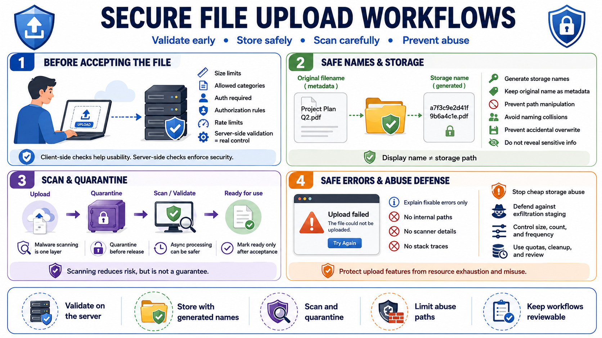

Secure File Upload Workflows
Connecting to LMS... Progress: in progress

Narration
Secure upload workflows start before the file is accepted. The application should enforce upload size limits, allowed categories, authentication requirements, authorization rules, and rate limits appropriate to the workflow. Client-side checks improve usability, but server-side validation is the control. A user who bypasses the browser should not be able to submit an oversized, unsupported, or unauthorized file.
Generated filenames are safer than user-controlled storage names. The original filename can be stored as metadata for display or audit purposes after validation and encoding, but the storage path should be chosen by the server. This prevents path manipulation, naming collisions, confusing overwrite behavior, and accidental publication under a meaningful or executable name. The storage identifier should not reveal sensitive information.
Malware scanning and quarantine patterns can reduce risk where files may later be opened by users or processed by internal systems. Scanning should be treated as one layer, not a guarantee. Some workflows benefit from asynchronous processing: upload the file, place it in quarantine, scan and validate it, then mark it ready when accepted. This avoids forcing complex scanning and parsing into the request path.
Safe upload errors should explain what the user can fix without exposing internal paths, scanner details, stack traces, or sensitive policy internals. Upload features should also be protected from abuse as cheap storage, data exfiltration staging, or resource exhaustion paths. A good workflow accounts for size, count, frequency, user identity, tenant context, storage quotas, cleanup, and review.